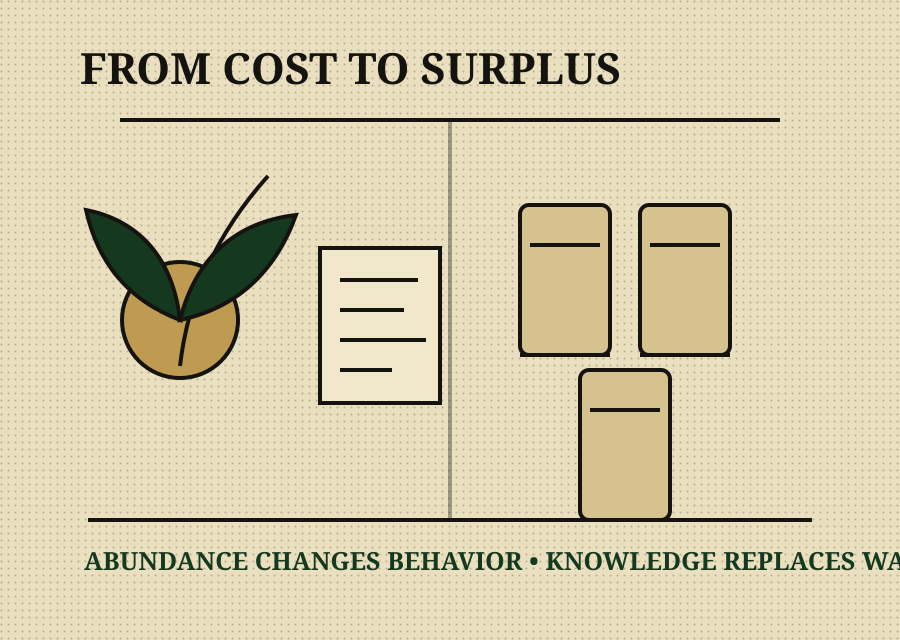

The Philosophy Desk
What it means to be Bud Rich
Bud Rich is not about how much weed you have. It is about understanding the plant well enough that it gives back.

Bud Rich, noun / mindset
Being Bud Rich means reaching a point where cannabis stops being a constant expense and starts becoming a renewable resource. It is when your grow pays for itself, your stash lasts longer than the calendar year, your future consumption is secured, and the money that used to disappear into cannabis is free to flow into family, tools, travel, reinvestment, education, and quality of life.
It is not about hoarding jars or flexing numbers. It is cultivation literacy, patience, and respect for the process. It is the moment cannabis stops being an expense and starts being an asset.
The shift from consumer to cultivator
Most people stay stuck in consumer mode: buying, burning, repeating. Being Bud Rich happens when you cross the line into producer thinking. You learn why plants respond the way they do. You learn that mistakes can teach better lessons than a thousand recycled clips. You learn that good weed comes from good decisions made early.
Bud Rich is
- Understanding the plant
- Growing with intention
- Valuing quality over quantity
- Letting experience beat ego
- Teaching the next grower correctly
- Abundance creating patience
Bud Rich is not
- Chasing THC numbers blindly
- Buying hype strains without thought
- Hoarding mids
- Flexing jars for attention
- Pretending to know what you have not grown
- Confusing noise with expertise
Abundance as a trust signal
In grow spaces, abundance equals security. When someone has their own harvest handled, they move differently: less desperate, less rushed, less likely to cut corners, and more likely to protect the ecosystem they benefit from. Abundance changes behavior.